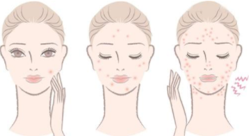

经常熬夜、睡眠不足的居民，疾病状态是起居规律的居民的两倍多！ 熬夜，真的就是在玩命。或许其带来的疾病风险不能直观看到，但熬夜后的容颜变化就非常明显。网上不少网友晒出自己熬夜前后的颜值对比照，其“惨烈”程度不亚于车祸现场。
根据中医理论，子时（23:00-01:00）是足少阳胆经“当值”，这时是身体休养和修复的开始，应该睡觉。子时前入睡者，第二天脑清晰，气色红润。 按时起居应做到每天晚上11点前睡觉，不要熬夜，并确保20分钟左右午休。
经常熬夜的人大脑总是处于紧张的状态，会使头皮血液循环不畅，长久下去会使毛囊发生萎缩，从而出现脱发的情况；其次，作息时间没有规律容易引起内分泌失调，这也会引起脱发。
熬夜会使体内皮质醇水平增加，继而使皮脂腺分泌更多油脂，皮肤变得更敏感。这样，黑头、痘痘就会找上门来，肤质也容易变得发红、粗糙。 
当你睡眠不足时，眼睑由于长时间处于紧张收缩状态，眼周血管和组织充血过度或水肿，就容易形成“黑眼圈”。
熬夜会影响你正常的新陈代谢，使脸部肌肤失去滋养、胶原蛋白流失、没有弹性，出现皱纹、皮肤暗淡无光。如果没有参照，可能还看不出来；但一对比，立马就能带来伤害。

- 当然，人生一世，很多时候都是身不由己。虽然不想熬夜，但有太多的因素可能让你我不得不加入到熬夜的大军中来。那么下面2招可以降低熬夜所带来的伤害值。保重身体，且行且珍惜！！！
-
多喝水
熬夜特别容易损耗津液，使人阴虚上火，所以多喝水，能减轻这个伤害。 如果熬夜较长，还可以喝点新鲜果汁，有助于补充维生素和水分，维持身体正常代谢。避免因熬夜而大吃油腻、高糖、高淀粉的食物。 -
间隔休息
熬夜会让人们眼睛干涩、疲劳，尽量每30分钟闭上眼转转眼珠；久坐会让腰背负荷过大，持续敲打键盘、鼠标也会让手腕感到不适，建议每隔一段时间就起身活动，做几个养生操的动作，放松紧绷的肌肉。